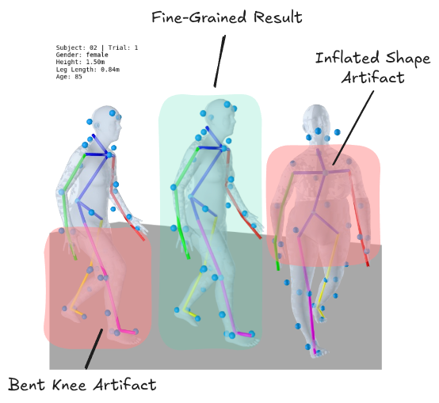
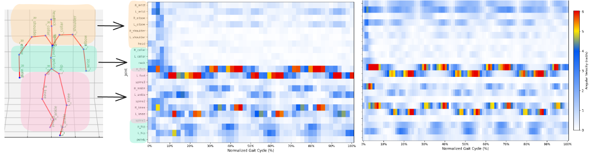
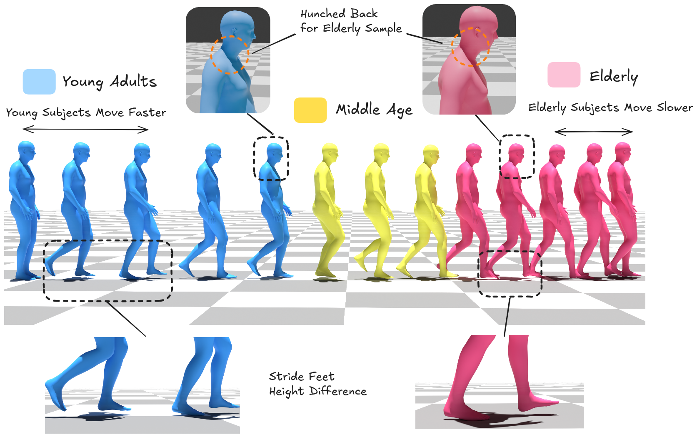
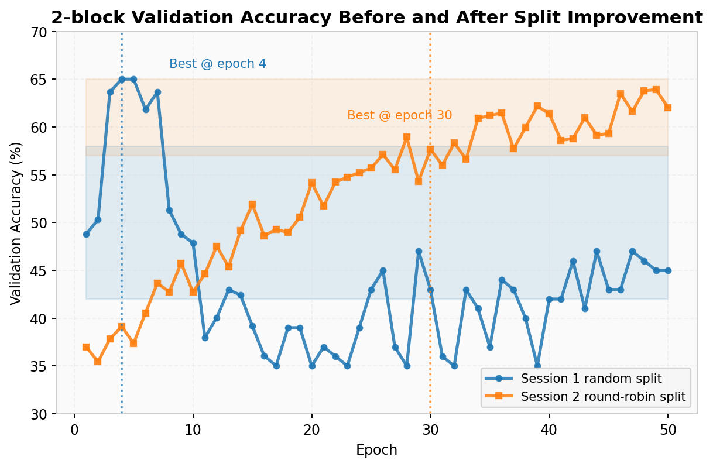
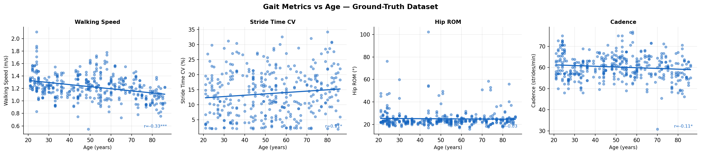
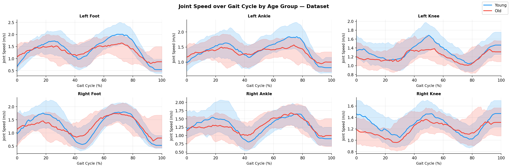
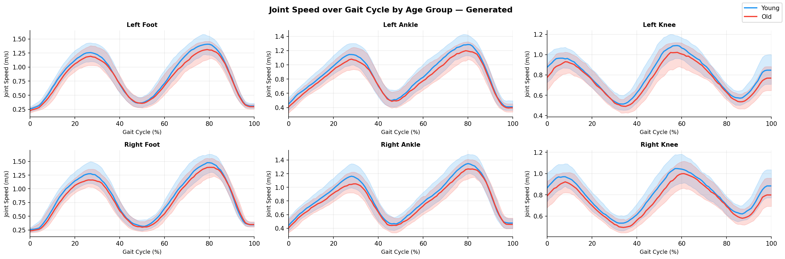

ST-GCN age-signature classifier used to test whether processed clips preserve demographic kinematic cues.

LoRA-adapted Motion Diffusion Model with discrete age tokens for text-conditioned walking synthesis.
Robotic and AI for Aging workshop · under review
We present an age-conditioned human motion generation framework for elder care robotics. The pipeline converts clinical gait recordings into learning-ready motion representations, trains an ST-GCN to detect age-group signatures from motion, and fine-tunes a Motion Diffusion Model with LoRA to generate text-conditioned motions with age control. Evaluation on 9,000 generated clips shows promising spatial kinematic adaptation, while stride timing and variability remain key challenges.
Right-side hero cover placeholder. Replace this panel with the final plot once the figures are ready.
Assistive robots must anticipate and respond to human movement in settings where users may vary widely in balance, gait speed, joint mobility, and functional capacity. Motion diffusion models are powerful tools for synthesizing diverse human actions, but widely used motion-capture datasets are biased toward young and healthy actors. This creates a mismatch for elder care robotics, where a generic adult motion prior may fail to represent age-related movement patterns that matter for safety, planning, and interaction.
Clinical gait analysis offers a route into this problem because it measures motion features that are known to change with aging: walking speed, stride length, stride timing variability, cadence, and hip/knee range of motion. Our goal is to connect these clinically meaningful signals with modern generative motion models, then test whether age-conditioned synthesis can preserve the biomechanical structure needed for robotics use.
ST-GCN age-signature classifier used to test whether processed clips preserve demographic kinematic cues.
LoRA-adapted Motion Diffusion Model with discrete age tokens for text-conditioned walking synthesis.
The framework has three linked components. First, clinical marker data are retargeted into a body-model representation while filtering clips affected by short sequences, initialization transients, mislabeled markers, and irrecoverable capture artifacts. Second, an ST-GCN age classifier is trained on the resulting clips to test whether the representation preserves age-related kinematic signatures. Third, a pre-trained MDM is adapted using LoRA so that walking prompts can be conditioned with discrete age tokens: young, mid, and old.
Evaluation is deliberately training-free: generated and real clips are compared through clinical gait metrics, including walking speed, stride length, cadence, stride-time coefficient of variation, stride-length coefficient of variation, and hip/knee range of motion. This keeps the analysis grounded in interpretable biomechanics rather than only visual inspection.

Data processing architecture. Clinical motion-capture recordings are cleaned, fitted to SMPL with VPoser regularization, and converted into HumanML3D-compatible motion features.

Artifact analysis during clinical motion retargeting.

Joint angular-velocity heatmaps reveal reduced peak velocities in the elderly subject.
The processed clinical dataset preserves expected aging trends: Young-to-Elderly walking speed decreases, stride length decreases, knee range of motion decreases, and stride-time variability increases. The ST-GCN classifier reaches 64.6% validation accuracy while most reliably separating the kinematic extremes, Young and Elderly. The Mid-age category remains harder to classify, which is consistent with weaker age separation and larger within-group variability in that interval.
For generation, the age-conditioned MDM produces visible stylistic differences across tokens. Quantitatively, the old token reduces hip range of motion relative to young and mid, suggesting that the adapter can impose spatial kinematic constraints. The main unresolved issue is temporal consistency: generated stride variability remains elevated across age tokens and overshoots clinical baselines.

Representative generated walking sequences across age tokens. Visual cues appear in posture and foot-clearance patterns, but the quantitative gait analysis is needed to judge biomechanical fidelity.

ST-GCN training loss.

ST-GCN validation accuracy.

Confusion matrices show stronger separation between Young and Elderly than the Mid-age interior group.

Ground-truth clinical gait metrics show expected age trends, validating that the preprocessing pipeline preserves meaningful aging signatures.

Generated clips reproduce some spatial trends, especially range-of-motion reduction under the old token, but stride variability remains too high across generated groups.

Ground-truth joint-speed profiles over the gait cycle.

Generated joint-speed profiles over the gait cycle.
This project is an initial step toward demographic-aware motion priors for elder care robotics. It shows that age-related information can be detected in processed clinical gait clips and partially transferred into a text-conditioned motion generator. At the same time, it makes the central bottleneck visible: small age-diverse datasets and discrete low-rank adaptation are not enough to guarantee clinically faithful gait timing and variability.
Future work should move toward larger age-diverse datasets, continuous age or biomechanical style conditioning, and constraints that explicitly preserve gait timing, balance, and range-of-motion structure. These directions are important for using generated motion in simulation, assistive robot planning, and safer human-robot interaction for aging-in-place contexts.

Future direction: replace discrete age tokens with a continuous biomechanical style representation that can support smoother age interpolation and individual mobility profiles.